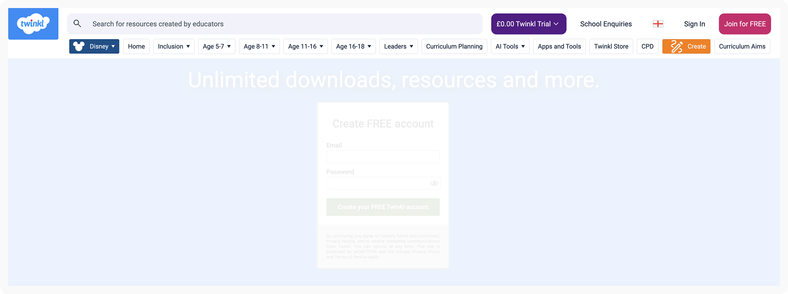
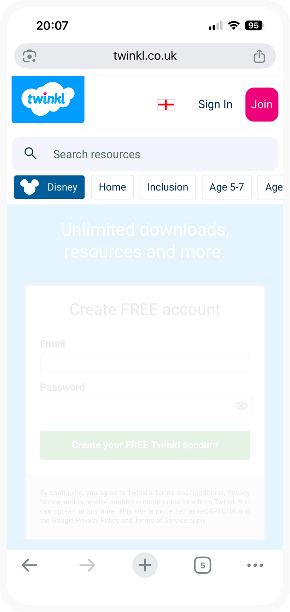

27th May 2026 · Time spent: 3.5hrs
Senior / Lead Product Designer · Interview task
A redesign of the twinkl.co.uk top navigation bar, balancing 1.5 million resources against a simple, reliable experience for educators across desktop and mobile.
1.5M
Resources on the Twinkl platform
4.5hrs
Time spent on this task
3
Research participants
Twinkl currently offers over 1.5M educational resources of very different types, for various age groups, learning years, subjects and more.
There are currently many ways for users to find the right resource for them and navigating through the website’s main navigation bar is a key starting point. However, given the broad nature of these, it’s currently hard to come up with a single and simple navigation structure.
The task: redesign the top nav bar, balancing Twinkl’s broad resource diversity and a manageable, easy, and reliable user experience.
Heuristic review
Heuristic review of the current navigation across desktop and mobile.
User research
Scenario-based user research session.
User flows
User flows created.
Wireframe exploration
Wireframe exploration of proposed solution.
User flow diagram
A user flow diagram considering all pages relevant to the navigation journey. View on the Research page ›
Mock ups
Key screens at lo-fidelity wireframe and hi-fidelity, covering desktop and mobile. View on the Design page ›
Video walkthrough
A video recording explaining the problems identified, the rationale behind the proposed solution, and how success would be measured. View on the Outcomes page ›
The current twinkl.co.uk top navigation across desktop and mobile — the starting point for this redesign.

